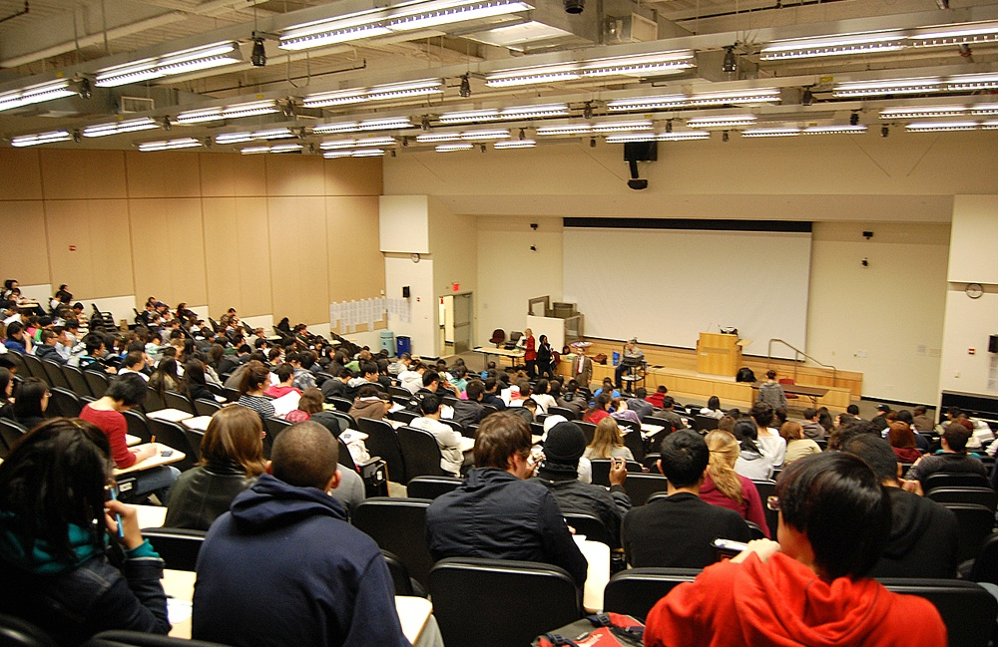

13.4 Condições de trabalho



Registram-se transformações profundas nas condições laborais dos docentes com impacto direto na capacidade de assegurar o modelo de ensino exigido na era digital.
13.4.1 Dimensão das turmas
A variável de maior visibilidade é a dimensão das turmas. Embora a integração tecnológica viabilize economias de escala na docência (ver Bates, 2013), e inexistindo um rácio numérico ideal entre docentes e discentes, analisou-se nos capítulos anteriores que a presença do professor e a comunicação sistemática entre especialistas e alunos constituem fatores críticos para desenvolver competências para a era digital.
Embora a tecnologia possa substituir o docente na transmissão de dados e conteúdos, a exigência de diálogo contínuo para a consolidação de conhecimentos e desenvolvimento de competências impõe limites ao número de estudantes sob a tutela de cada professor, sob pena de degradação da eficácia letiva no que se refere às competências de maior relevância cognitiva (Carey e Trick, 2013).
Deste modo, o desafio reside nas universidades e nos institutos superiores de grande dimensão, nos quais turmas de primeiro e segundo anos acolhem milhares de inscritos, registando-se centenas de alunos inclusive nos anos finais de graduação. Quais estratégias adotar para assegurar rácios professor/aluno adequados? As instituições têm respondido a este desafio sob abordagens diversas.
13.4.2 A expansão da contratação temporária e o recurso a assistentes de ensino (monitores)
Uma das maiores mudanças nas universidades norte-americanas nas últimas duas décadas consiste no crescimento do corpo docente contratado fora da carreira estável (tenure track). O crescimento expressivo de matrículas na graduação no Canadá — com acréscimo de 400.000 alunos entre 2002 e 2012 — processou-se sem o correspondente aumento de vagas para professores de carreira estável. Embora o número de docentes contratados tenha duplicado entre a década de 1980 e 2006, registou-se redução de 10% nas vagas permanentes (Chiose, 2015). A realidade apresenta contornos mais agudos nos EUA, país no qual o ensino superior foi severamente afetado pela crise econômica de 2008.
Num artigo publicado no jornal canadense Globe and Mail, Simona Chiose assinalou (2018):
As universidades canadenses declaram que se tornou inviável manter o ensino superior assente exclusivamente em docentes de carreira estável que dedicam mais de um terço do seu tempo de trabalho à pesquisa científica. Em substituição, a maioria das universidades optou pela contratação de docentes em regime temporário e por carreiras focadas em ensino para assegurar a docência a custos reduzidos.
O corpo docente contratado temporariamente (adjuncts ou sessionals) é detentor de doutorado na área científica ou possui ampla experiência profissional em setores de pendor técnico. No Canadá, o sindicato que representa estes docentes (CUPE) mobiliza esforços para garantir contratos plurianuais a professores temporários que se veem obrigados a candidatar-se anualmente às vagas. O objetivo sindical consiste em assegurar prioridade a estes profissionais na transição para carreiras estáveis focadas no ensino que, embora desprovidas de estabilidade vitalícia (tenure), garantam segurança laboral e abram oportunidades para a formação pedagógica.
Contudo, constata-se uma tendência de maior risco pedagógico nos anos recentes: o recurso crescente a estudantes de pós-graduação como assistentes de ensino (monitores/TAs), frequentemente responsáveis pela lecionação de turmas de 200 ou mais alunos no primeiro e segundo anos da graduação. Este modelo é igualmente adotado na transição de disciplinas para formatos híbridos (Blended Learning), redefinindo-se grandes turmas expositivas presenciais. Mesmo com a inclusão de TAs, o rácio docente/estudante nos cursos híbridos populosos supera frequentemente a marca de 1:100. Registra-se a escassez de formação pedagógica específica para a docência on-line direcionada a assistentes de ensino, embora em diversos casos estes profissionais frequentem ações de iniciação à docência presencial.
Por sua vez, nas disciplinas totalmente on-line vigora habitualmente um modelo com rácios delimitados intencionalmente abaixo de 40 alunos na graduação e de 30 na pós-graduação. O crescimento em escala destas disciplinas processa-se pela contratação de professores adjuntos adicionais, financiando-se a sua participação em cursos breves de capacitação letiva on-line que definem as premissas pedagógicas a seguir. Trata-se de um modelo economicamente viável pelo fato de o fluxo de propinas dos estudantes cobrir os custos de contratação docente decorrentes da abertura de novas turmas (Bates e Poole, 2003).
Esta dinâmica tem sido viabilizada pelo fato de os cursos on-line se destinarem prioritariamente a alunos de graduação avançada ou de pós-graduação. Com a transição de grandes turmas de primeiro e segundo anos para os formatos híbrido e on-line, desenham-se modelos alternativos que correm o risco de não observar os padrões de qualidade das melhores práticas digitais, cenário complexo por diversas razões:
- as metodologias aplicadas a grandes turmas no presencial e no digital diferem consoante as disciplinas e as instituições de ensino, dificultando generalizações;
- as opções pela contratação de assistentes de ensino ou professores em regime temporário decorrem de condicionantes financeiras e não de critérios de excelência pedagógica;
- o recurso a assistentes de ensino e adjuntos é condicionado por fatores extrínsecos à pedagogia e às finanças, tais como o apoio financeiro a pós-graduandos e estudantes internacionais, a iniciação à docência por tutoria e o volume de doutorandos que buscam inserção na carreira acadêmica de docência e pesquisa;
- inexiste um rácio professor/aluno de referência universal para o ensino híbrido ou on-line. Em disciplinas científicas exatas (STEM), rácios elevados são sustentáveis sem perda de qualidade por intermédio de feedback e avaliações automatizadas na vertente teórica, enquanto a componente prática laboratorial exige turmas pequenas para compartilhamento de recursos e acompanhamento dos alunos;
- os MOOCs geram o equívoco de que seria viável expandir o ensino digital formal a custos mínimos eliminando o suporte e a mediação pedagógica docente de carreira.
Apesar destas condicionantes, a dependência excessiva de assistentes de ensino sem qualificação pedagógica adequada para a docência on-line encerra riscos evidentes para os estudantes e para o prestígio da aprendizagem digital:
- à semelhança do presencial de grande dimensão, a docência on-line ou híbrida resvalará para modelos meramente transmissivos e expositivos pela escassez de qualificação pedagógica dos TAs para o digital;
- as taxas de insucesso e abandono letivo nos cursos híbridos tendem a elevar-se nos anos iniciais da graduação pela falta de acompanhamento adequado aos estudantes. Consequentemente, alunos e professores passarão a considerar o ensino on-line e híbrido inferior ao modelo presencial clássico de sala de aula;
- o corpo docente e as organizações sindicais passarão a identificar o ensino híbrido e on-line como estratégias de redução de custos pelas reitorias para a eliminação de cargos docentes permanentes, mobilizando esforços para bloquear a sua implementação.
Qual a razão pela qual os assistentes de ensino enfrentam barreiras no suporte on-line caso tenham aproveitamento no presencial? Em primeiro lugar, a eficácia do suporte dos TAs nas grandes turmas presenciais já é passível de questionamento. Adicionalmente, em disciplinas em que a argumentação científica, a tomada de decisões qualitativas e a apropriação complexa do conhecimento são prioritárias — ou seja, em áreas cujo aproveitamento exige mais do que a reprodução de dados —, os estudantes demandam diálogo com um docente que detenha especialização e maturidade científica no domínio do saber. Vigoram, pois, fundamentos para a contratação de professores adjuntos qualificados para o ensino híbrido ou on-line, em detrimento do recurso generalizado a assistentes de ensino em formação.
13.4.3 O tema omitido nos debates (The Elephant in the Room)
No entanto, o debate sobre o recurso a assistentes e contratados temporários oculta questões estruturais de grande relevância. Identificam-se dois fatores na base do gigantismo das turmas dos anos iniciais da graduação que docentes e sindicatos tendem a omitir:
- a escassez de dotação de recursos docentes qualificados para o primeiro e segundo anos: professores de carreira estável concentram a sua atividade letiva nos anos finais da graduação para assegurar turmas menores, penalizando os estudantes que ingressam no ensino superior;
- o ensino como financiador da pesquisa: com frequência, receitas oriundas das propinas dos estudantes são direcionadas ao financiamento das atividades de pesquisa científica da instituição. Caso os docentes dedicassem maior tempo letivo ao ensino em detrimento da pesquisa, haveria maior disponibilidade de professores para a docência. A carga letiva de professores de carreira estável é por vezes reduzida e concentrada em turmas pequenas do final do curso. Um relatório do Higher Education Quality Council of Ontario (Jonker e Hicks, 2014) apontou que, se os docentes com baixo rendimento em pesquisa duplicassem a sua carga horária letiva de ensino, este esforço equivaleria à contratação de 1.500 novos professores na província, volume suficiente para equipar uma universidade de médio porte.
13.4.4 A diversidade do corpo docente
A par da diversidade de perfis de estudantes, cumpre analisar a diversidade crescente do corpo docente das instituições de ensino superior, constituído por:
- professores de carreira estável focados em pesquisa científica, com qualificações acadêmicas elevadas, mas escassa ou inexistente formação pedagógica de base;
- professores temporários e adjuntos, qualificados cientificamente, mas sem acesso a ações estruturadas de desenvolvimento letivo na instituição;
- assistentes de ensino (pós-graduandos e monitores) com qualificações acadêmicas em desenvolvimento e sem formação pedagógica consolidada;
- instrutores de áreas técnicas e tecnológicas com sólida experiência profissional no setor e formação pedagógica básica;
- professores do ensino básico com formação pedagógica geral qualificada, mas poucos com capacitação específica para o ensino na era digital.
As origens e o impacto desta diversidade excedem os objetivos desta obra, restando assinalar que, na ausência de estabilidade profissional e de condições de trabalho adequadas, os docentes carecem de incentivos para investir no estudo de metodologias digitais inovadoras.
Referências
Bates, A. and Poole, G. (2003) Effective Teaching with Technology in Higher Education: Foundations for Success San Francisco: Jossey-Bass
Bates, T. (2013) Productivity and online learning redux, Online Learning and Distance Education Resources, December 23
Carey, T., & Trick, D. (2013). How Online Learning Affects Productivity, Cost and Quality in Higher Education: An Environmental Scan and Review of the Literature. Toronto: Higher Education Quality Council of Ontario
Chiose, S. (2018) Increased pressures, class sizes, taking their toll on faculties in academia, Globe and Mail, May 12
Jonker, L. and Hicks, M. (2014) Teaching Loads and Research Outputs of Ontario University Faculty: Implications for Productivity and Differentiation Toronto: Higher Education Quality Council of Ontario
Atividade 13.4 Condições de trabalho
- Qual a razão pela qual a dimensão da turma assume relevância no desenvolvimento de competências para a era digital?
- Identifica-se a leitura por parte de governos de que o ensino on-line viabilizaria o aumento da dimensão das turmas. Concorda com este pressuposto? Apresente as suas razões.
- Sob a perspectiva do desenvolvimento de competências para a era digital, quais as vantagens e limites de contar com carreiras diferenciadas no ensino superior (docentes focados exclusivamente no ensino face a docentes de pesquisa)?
Para feedback sobre estas questões, ouça o podcast na versão digital original desta obra.
Ligação para áudio digital original em: https://pressbooks.bccampus.ca/teachinginadigitalagev2/?p=343